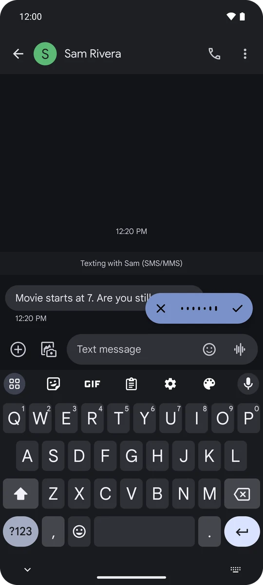
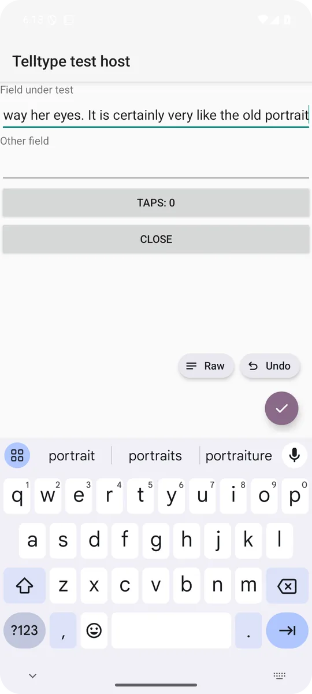
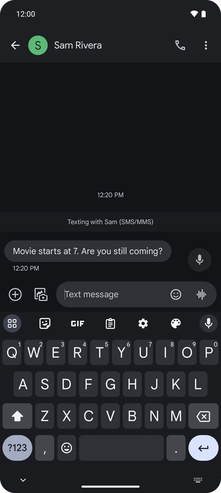
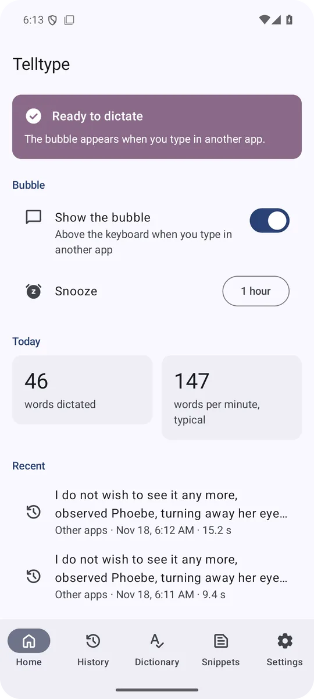
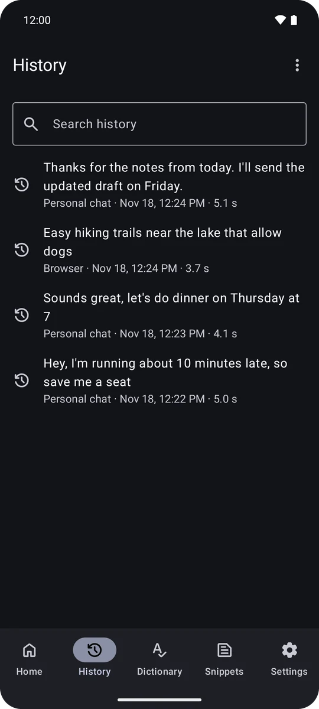
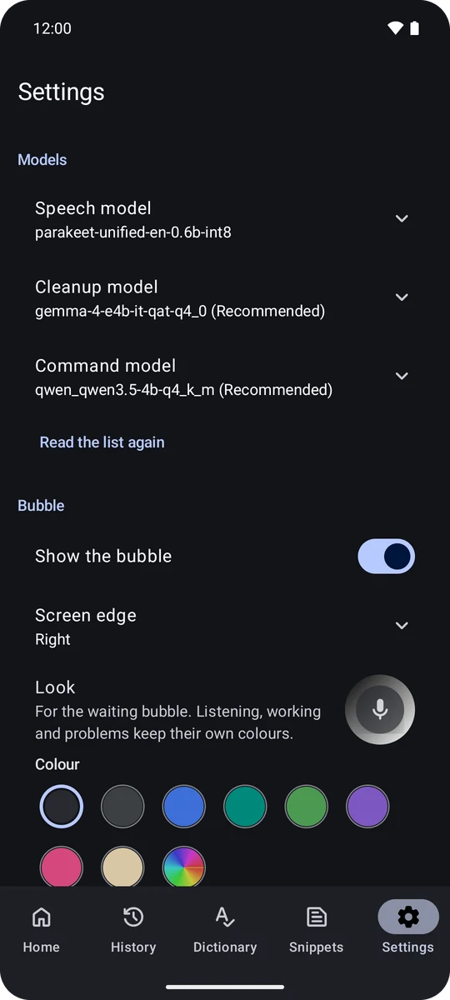
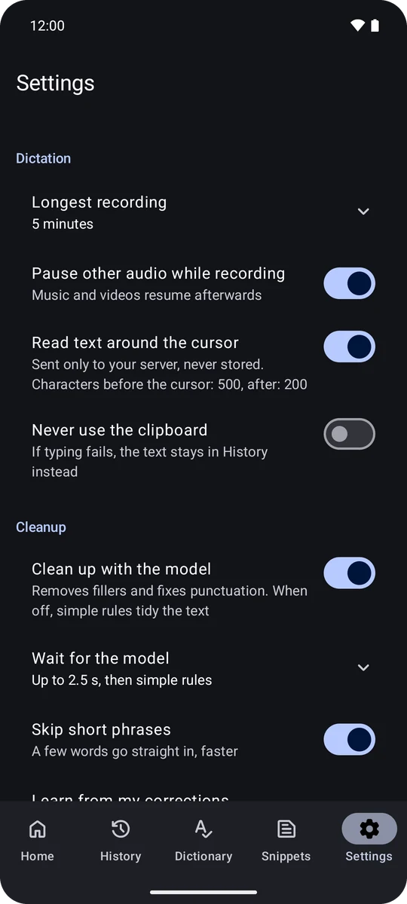

Free and open source · Android 13+
Talk the way you talk. Get the text you meant.
Say "um", start over, change your mind halfway through. Telltype types what you meant, punctuated and written the way you would write it, at the cursor of whatever app you are in. Everything runs on your own server.
Signed APK on GitHub Releases. Apache License 2.0.


See the difference
First what you said, word for word. Then what Telltype typed.
-
Ums and restarts
You said
thethe report isuhbasically done I just need toumadd the chartsTelltype typedThe report is basically done. I just need to add the charts.
-
Changing your mind
You saidlet's meet at
five pm no actuallysix pmTelltype typedLet's meet at 6 pm.
-
A list, said out loud
You saidpack the following
umcharger passport headphones and the blue jacketTelltype typedPack the following: - Charger - Passport - Headphones - The blue jacket
-
Dates and times
You saidmy appointment is on march third at two thirty
Telltype typedMy appointment is on March 3 at 2:30.
-
The right tone for the app
You saidyeah so I'm gonna be
liketen minutes late sorry traffic is crazyIn an emailI am going to be 10 minutes late. Sorry, traffic is crazy.
In a chat with a friendyeah so i'm gonna be 10 minutes late sorry traffic is crazy
-
Editing by voice
You selectedsend me the report by friday. i need it for the board meeting.
and saidmake this more polite
Telltype typedCould you please send me the report by Friday? I need it for the board meeting.
Real output, not mock-ups: each example comes from Telltype's own test runs, with the app's prompt and its default models (Gemma 4 E4B for cleanup, Qwen3.5 4B for edits). Struck-through words are the ones Telltype left out.
Inspired by Wispr Flow, which showed that dictation can feel like this. Telltype brings the idea to Android, free and open source, on a server you run. It is not affiliated with Wispr.
Tap, speak, done
-

Tap the bubble
It shows up only while you are typing in a text field, and docks to the edge you choose.
-
Speak naturally
Pause, say "um", change your mind mid-sentence. Tap ✓ to finish or ✕ to throw it away.
-
Text appears
Typed at the cursor, about a second or two after you stop. Raw swaps in exactly what you said, Undo takes it back.
What you get
-
Talk naturally
No need to speak in finished sentences. Fillers and false starts are left out, and punctuation and capitals are added for you. Swearing stays if you said it.
-
It types what you meant
"No wait", "I mean" and "scratch that" are followed, not typed. Numbers, times and dates come out as digits, and a spoken list becomes a list.
-
It sounds right in every app
Email comes out formal, a chat with a friend stays casual. Pick the tone for each kind of app, or for one app on its own.
-
Your names, spelled right
Add a word to the dictionary and it sticks: "cooper netties" becomes "Kubernetes". Snippets turn "my address" into the text you saved.
-
Edit text by voice
Select some text, tap the bubble and say "make this more polite", "shorter" or "make this a bulleted list". Undo brings the original back.
-
Your words, your server
Audio and text go only to the server you set up. If it cannot be reached, the dictation waits in a queue, and History keeps what you said.




How it works
/v1/audio/transcriptions
Cleanup model /v1/chat/completions
Command model /v1/chat/completions
The recording goes to your server's speech model: Telltype Server uses NVIDIA Parakeet through sherpa-onnx, on the CPU. The transcript, the tone for the app you are in and the text around the cursor go to a small language model that cleans it up. The result is typed through Android's accessibility service, and the recording is deleted.
- 0.15–0.2 s
- to transcribe a 7 s clip, model warm
- 0.25–0.4 s
- typical cleanup
- 1.0–1.6 s
- from end of speech to typed text
Measured with a Ryzen AI MAX+ 395 server and a Pixel 10 Pro XL connected over Tailscale.
Private by design
- One destination. Audio and text go only to the server address you enter. No analytics, no crash-reporting service, no advertising id, no account.
- No audio kept. A recording is deleted as soon as its text is typed.
- History on your terms. Kept on the phone for 30 days by default, adjustable or off. Archived entries stay until you delete them.
- Secrets stay secret. Your server key is encrypted with a key held in the Android Keystore. A self-signed certificate is pinned once you confirm it.
Run your own server
Telltype Server is one program for Linux that gives the app everything it needs: speech to text, plus the cleanup and command models through llama.cpp's llama-server, which it starts and watches for you. It makes its own certificate and key, decodes audio in memory and never writes it to disk.
Already run a model server? Telltype works with any OpenAI-compatible server for transcription and chat, with or without a key, over HTTPS or plain HTTP on a private network.
$ cd server-rs
$ scripts/download_models.sh # checks SHA-256
$ scripts/install.sh # build, install
$ $EDITOR ~/.config/telltype/server.toml
$ scripts/install.sh # key, certificate, start